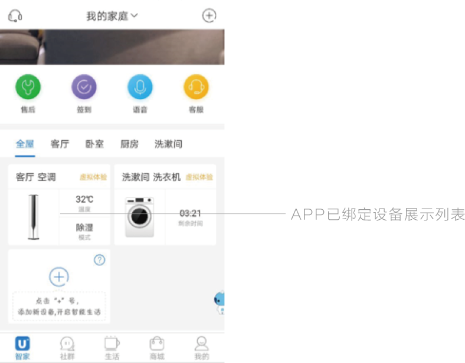

冰箱初次上电，Health Center显示屏及Fridge Center显示屏点亮。用户可在Fridge Center显示屏上对各藏室温度进行调节；Health Center体验家庭成员健康管理及娱乐功能。
如何登录
Health登录
Health Center大屏点亮后，用户根据屏端提示完成登录
①阅读用户隐私权益
使用Health Center连接wifi无线网络。
冰箱初次上电，Health Center显示屏及Fridge Center显示屏点亮。用户可在Fridge Center显示屏上对各藏室温度进行调节；Health Center体验家庭成员健康管理及娱乐功能。
Health Center大屏点亮后，用户根据屏端提示完成登录
①阅读用户隐私权益
使用Health Center连接wifi无线网络。
②输入手机号码及短信验证码后点击【完成】开启更多卡萨帝体验。
下载海尔优家APP实现冰箱温度远程控制、相册同步、留言板同步等功能。 使用Health Center登录时使用的账号（手机号码）登录海尔优家APP （详细流程请参阅P10“远程控制”）

卡萨帝冰箱采用TFT屏幕，用户可以在屏幕上手势点击、滑动、长按来实现对软件的操作。

Health Center具有成员健康管理、新鲜管家、精美菜谱、视听极享等功能， 轻触屏幕进入相应功能。 ***操作界面以实际产品显示界面为准
Fridge Center支持蓝牙体脂称连接，冰箱可以通过体脂称获取您的体重体脂数据。 当您需要输入体重或修改体重数据时请进入体重数据录入页面并点击【自动称重】后打开称重页面，请站立于体脂称上并保持体脂称显示屏亮起，此时冰箱与体脂称自动连接并测量体重数据。
***使用时请检查冰箱蓝牙功能是否开启。 若要完成体脂称数据上传请先完成体脂称测量（体脂称测量完成后会在其显示屏上闪烁当前体重数据表示体脂称测量完成）
冰箱智能语音唤醒词为“小优，小优”，您可以通过语音唤醒冰箱智能语音交互功能。
Fridege Center分为冰箱控制区域和空间管理区域。点击温度控制区进入冰箱温度控制设置功能界面。
下滑屏幕可以选择切换冰箱预置温度场景。 轻触屏幕选择预设场景。上滑屏幕退出选择。
通过Fridge Center查看冰箱实时温度及状态，轻触温度区域进入温度设置界面


空间管理功能对Fridge Center下方抽屉中存放的物品进行记录和管理，用户根据存放的物品选择空间管理的模式。【母婴空间】按钮下滑屏幕打开空间切换页面。
扫描二维码下载海尔优家APP或应用商城搜索“海尔优家”
在APP界面中选择【我的】→快速登录
通过手机APP将冰箱远程控制权限分享给其他家庭成员
点击【我的】→【点击家庭管理】并按APP操作输入家庭成员手机号进行冰箱控制权限的分享。
***操作界面以实际产品显示界面为准
更换冰箱内灯及电器部件时，一定要拔掉电源插头，否则容易触电。如出现故障，请勿自行拆卸。请及时联系售后人员予以处理。